Перейти на главную страницу справочника.
Расчёт обмотки трёхфазного односкоростного асинхронного двигателя.
Расчёт однослойной обмотки трёхфазного электродвигателя с напряжением питания 380 вольт, частотой тока 50 герц, соединение фаз "Y", количество параллельных ветвей а=1.
- Размеры сердечника статора. Di - внутренний диаметр сердечника статора в см. L - длина сердечника статора в см. h - высота спинки статора в см. b - ширина зубца статора в см.
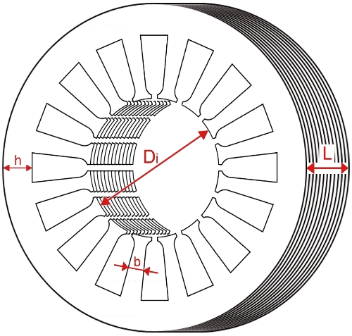
Определение основных параметров.
- Формула для определения числа полюсов (максимально допустимых оборотов) сердечника статора. Результат округлить до ближайшего целого чётного числа. Di - внутренний диаметр сердечника статора в см. h - высота спинки статора в см.

- Число пазов на полюс и фазу. Z1 - число пазов статора, 2р - число полюсов, m - количество фаз.

- Шаг однослойной обмотки по пазам. Z1 - число пазов статора, 2р - число полюсов.

Расчёт числа витков в пазу.
- Число витков в пазу. Z1 - число пазов статора, L - длина сердечника статора в см, b - ширина зубца статора в см, Вz - магнитная индукция в зубцах статора, выбирается в зависимости от мощности, оборотов и исполнения электродвигателя.
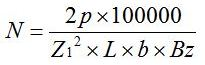
- Формула для проверки величины магнитной индукции в спинке статора. Если магнитная индукция превысит величину указанную в таблицах, увеличить число витков в пазу. Z1 - число пазов статора, L - длина сердечника статора в см, h - высота спинки статора в см, N - число витков пазу.

Расчёт площади паза.
- Трапецеидальный паз. Размеры паза в мм.
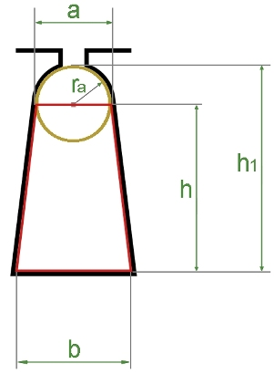
Разбиваем паз на две фигуры, это трапеция с высотой h и круг с диаметром а.
Высоту трапеции определяем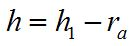
.
Площадь трапеции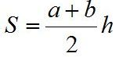
.
Площадь круга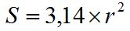
.
Для определения площади паза, нужно к площади трапеции прибавить половину площади круга.
Площадь паза.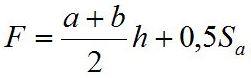
.
{kind=link}
- Грушевидный паз. Размеры паза в мм.
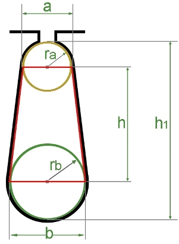
Разбиваем паз на три фигуры, это трапеция с высотой h и два круга с диаметром а и b.
Высоту трапеции определяем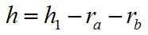
.
Площадь трапеции
.
Площадь круга
.
Для определения площади паза, нужно к площади трапеции прибавить половину площади круга а и b.
Площадь паза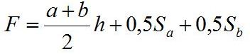
.
{kind=link}
Расчёт диаметра провода.
- Диаметр провода с изоляцией, мм. kп - коэффициент заполнения паза по таблице №1. F - площадь паза. N - число витков пазу.
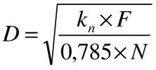
Таблица №1.
| Обмотка | Паз | kп при мощности, кВт. | ||
| до 1,0 | 1 - 10 | 10 - 100 | ||
| Однослойная | Трапецеидальный | 0,37 | 0,40 | 0,43 |
| Грушевидный | 0,42 | 0,46 | 0,50 | |
| Двухслойная | Трапецеидальный | 0,36 | 0,37 | 0,40 |
| Грушевидный | 0,37 | 0,40 | 0,43 | |
- При известных обмоточных данных старой обмотки, для расчёта сечения провода воспользуйтесь этой формулой, где Nс - число витков в пазу старой обмотки, Sс - сечение провода старой обмотки, N - число витков в пазу новой обмотки.

- Расчёт сечения провода с помощью стальных спиц. Nsp - число спиц поместившихся в паз, Ssp - сечение спицы (Диаметр спицы, условно диаметр провода с изоляцией), N - число витков в пазу новой обмотки.
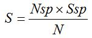
Расчёт максимального тока.
- Формула для расчёта максимального тока электродвигателя. S - сечение провода, j - плотность тока, выбирается в зависимости от мощности, оборотов и исполнения электродвигателя.

Расчёт мощности электродвигателя.
- Формула для расчёта мощности электродвигателя. I - максимальный ток электродвигателя. Результат произведения коэффициентов мощности и полезного действия (cosφ×η), берётся из таблиц в зависимости от мощности и оборотов электродвигателя.
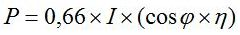
Расчёт числа витков в пазу фазного ротора.
Расчёт однослойной обмотки с частотой тока 50 герц, соединение фаз "Y", количество параллельных ветвей а=1.
- Число витков в пазу. U2 - напряжение питания обмотки ротора (от 100 до 340 вольт), N - количество витков в пазу статора, Z1 - число пазов статора, U - напряжение питания обмотки статора, Z2 - число пазов ротора.
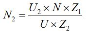
- Число пазов на полюс и фазу. Z2 - число пазов ротора, 2р - число полюсов, m - количество фаз.
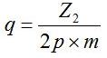
- Шаг однослойной обмотки по пазам. Z2 - число пазов ротора, 2р - число полюсов.
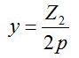
Расчёт однослойной обмотки в программе Excel.
13.06.2015 г.
Литература по данной теме:
Девотченко Ф.С. "Замена обмотки трёхфазных электродвигателей." 1991 г.
Кокорев А.С. "Справочник молодого обмотчика электрических машин" 1979 г.